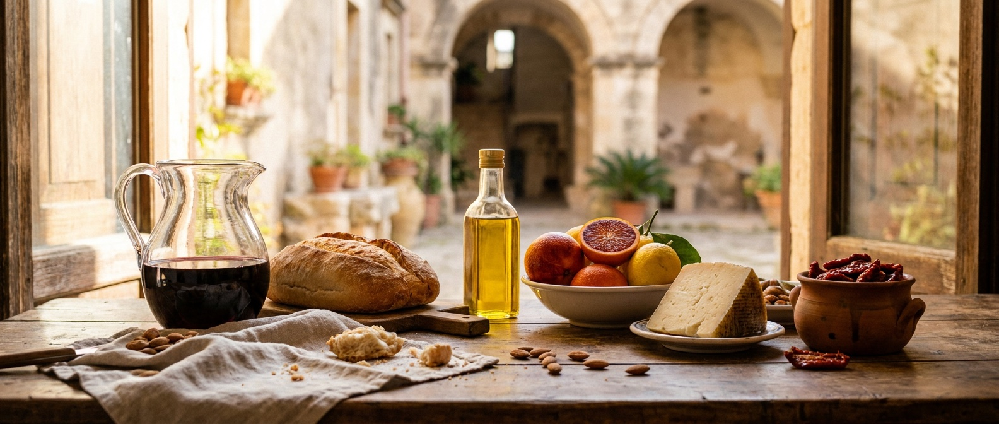

Baviera → Sicilia
Dalle Alpi
fino all'isola.
Birre bavaresi autentiche, portate in Sicilia dallo stesso treno che porta i sapori siciliani in Germania. Otto stili, secondo il Reinheitsgebot del 1516.
Pagina in costruzione · le foto sono segnaposto
Scopri le birre
Chi siamo
Il treno viaggia
in due direzioni.
Trinacria Express nasce da due persone: Massimiliano di Lorenzo, palermitano, e Michael Schnitzer-Trpin, austriaco, che vive in Sicilia da sei anni.
Portiamo le specialità biologiche siciliane in Germania — e ora facciamo il viaggio al contrario: birre bavaresi, formaggi di malga, pane di segale. Cose buone del nord, direttamente sull'isola.
Questa pagina è ancora in costruzione: le fotografie qui sotto sono segnaposto e il catalogo crescerà. Le birre, però, ci sono già.
ScriveteciIl catalogo
Otto birre dalla Baviera
Bottiglie da 0,33 l e 0,5 l, per cartone. Tutte prodotte secondo il Reinheitsgebot bavarese: acqua, malto, luppolo, lievito. Prezzi su richiesta — componete la vostra lista e inviatecela.
Vendita riservata ai maggiori di 18 anni. Bevi responsabilmente.
Contatto
Parlate direttamente con noi.
Nessun call center, nessuna attesa. Domande su prodotti, campioni, quantità o prezzi? Scriveteci due righe.
Titolare & contatto
Massimiliano di Lorenzo
Palermo, Sicilia
Titolare & contatto
Michael Schnitzer-Trpin
Austria · da sei anni in Sicilia